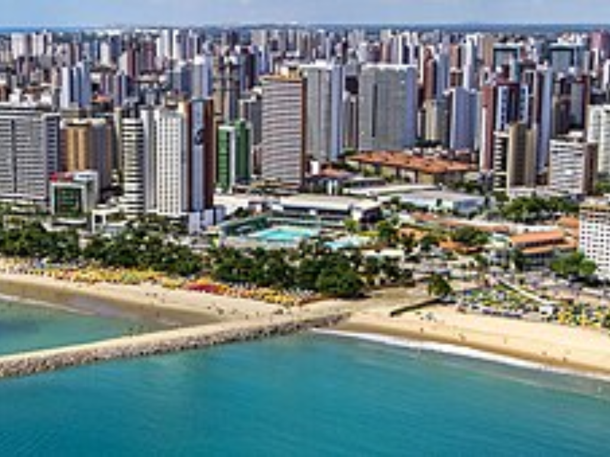

O Ceará é conhecido pelas belas praias e pelo turismo no litoral. Fortaleza é um dos principais centros econômicos e turísticos do Nordeste. O humor cearense e a música regional são marcas fortes da cultura local. A economia envolve comércio, indústria têxtil, turismo e energias renováveis. O estado possui clima quente e seco em grande parte do território. Destacam-se atrações como Jericoacoara e Canoa Quebrada.
